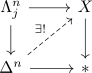
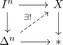

nerve and lifting horn inclusions
Proposition
Let $X$ be a simplicial set.
TFAE:
- there exists a category $\mathcal{C}$ such that the nerve $\mathcal{N}(\mathcal{C}) \cong X$
- $X$ has a unique extension for inner horn inclusions, i.e.

- $X$ has unique extension for spine inclusions for $n \geq 2$
